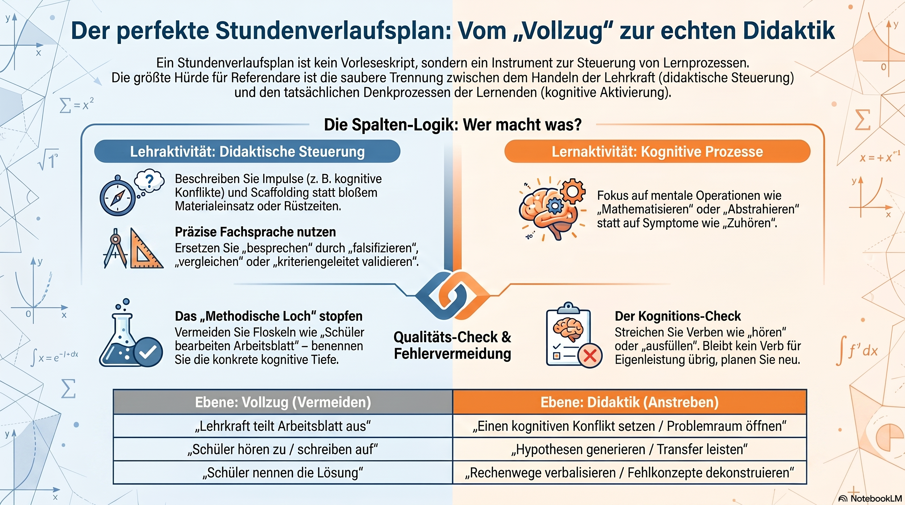

Der Stundenverlaufsplan als Steuerungsinstrument
Ein Stundenverlaufsplan ist kein chronologisches Regiebuch und kein Vorleseskript, sondern ein didaktisches Steuerungsinstrument: Er dokumentiert, wie Lernprozesse initiiert, begleitet und kognitiv aktiviert werden. Diese Handreichung zeigt, wie Sie administrativen Vollzug, didaktische Steuerung und tatsächliche Denkprozesse sauber trennen – und wie Sie das in präziser Sprache sichtbar machen.
Vom „Vollzug" zur echten Didaktik
Die Spalten-Logik, die häufigsten Fehler und der Kognitions-Check – als Infografik.

1Mehr als ein Ablaufprotokoll
Der tabellarische Unterrichtsverlauf gehört zu den anspruchsvollsten Teilen eines Entwurfs – gerade weil er so harmlos aussieht. Verführerisch ist die Vorstellung, man müsse nur notieren, was nacheinander geschieht. Dann entsteht ein Regiebuch: „Lehrkraft begrüßt", „Lehrkraft teilt Arbeitsblatt aus", „Schüler bearbeiten Aufgabe 1". Das ist chronologisch korrekt und didaktisch leer.
Der Verlaufsplan ist stattdessen ein didaktisches Steuerungsinstrument. Er soll zeigen, wie Lernen professionell initiiert, begleitet und kognitiv aktiviert wird. Die eigentliche Schwierigkeit liegt darin, drei Ebenen sauber auseinanderzuhalten, die im Klassenraum gleichzeitig ablaufen:
Administrativer Vollzug
Material austeilen, Folie auflegen, Gruppen bilden. Notwendig, aber keine didaktische Aktivität – gehört nicht als Eigenleistung in die Spalten.
Didaktische Steuerung
Impulse, formative Diagnostik, Scaffolding – das professionelle Handeln, das Lernen ermöglicht.
Denkprozesse
Die mentale Operation der Lernenden am Lerngegenstand – das, was im Kopf tatsächlich geschieht.
Die Leitfrage für jede Zeile: Beschreibe ich hier eine organisatorische Mikro-Aktion, eine didaktische Steuerung der Lehrkraft oder eine eigenständige Denkleistung der Lernenden? Nur die beiden letzten verdienen einen Platz – und sie gehören in die jeweils richtige Spalte.
2Die Spalten-Logik: Wer macht was?
Die beiden inhaltstragenden Spalten beschreiben dasselbe Geschehen aus zwei Perspektiven. Links steht, was die Lehrkraft tut, um Lernen zu ermöglichen; rechts steht, womit sich die Lernenden geistig auseinandersetzen. Entscheidend ist, dass keine Spalte in den typischen Kurzschluss verfällt.
Lehraktivitäten
- Nicht so
- Wörtliche Redezeiten oder bloßes Auflisten von Medien („liest Folie vor", „teilt Arbeitsblatt aus"). Organisatorische Mikro-Aktionen sind Rüstzeiten.
- Sondern so
- Impulse formulieren (kognitiver Konflikt, Öffnung des Problemraums), formative Diagnostik (Wie wird der Lernstand erfasst?) und Scaffolding (Welche Hilfen stehen bereit?).
Geplante Lernaktivitäten
- Nicht so
- Vorwegnahme des Erwartungshorizonts oder des Ergebnisses („Die Schüler erklären, dass ein Rechteck …"). Das ist ein Lernziel oder ein Ergebnis, kein Prozess.
- Sondern so
- Die kognitive Operation benennen, mit der das Ziel erreicht wird („… isolieren relevante geometrische Eigenschaften", „… übertragen Vorwissen auf die neue Struktur").
Hinter dieser Trennung steht eine einfache Probe: Die linke Spalte beantwortet die Frage „Wie ermögliche ich Lernen?", die rechte die Frage „Was leisten die Lernenden gedanklich?". Wo in der rechten Spalte ein Ergebnis steht, fehlt der Prozess; wo in der linken Spalte nur Organisation steht, fehlt die Didaktik.
3Drei typische Konstruktionsfehler
Drei Muster tauchen in Entwürfen besonders häufig auf. Sie sind nicht „falsch" im Sinne eines Rechtschreibfehlers, sondern sie verdecken genau das, was der Plan sichtbar machen soll: die didaktische Tiefe.
| Typisches Muster | Didaktische Konsequenz | Sachgerechte Lösung |
|---|---|---|
| Das Schein-Gespräch „Schüler nennen die Definition" |
Suggeriert einen friktionsfreien, mechanischen Ablauf, der realen Lernprozessen widerspricht. | Die Interaktion beschreiben: „Lernende prüfen Hypothesen im Diskurs und falsifizieren Fehlkonzepte." |
| Das methodische Loch „Schüler bearbeiten Arbeitsblatt" |
Die kognitive Tiefe der eigentlichen Lernphase bleibt völlig im Dunkeln. | Die Operation spezifizieren: „Lernende strukturieren Daten, vergleichen Kriterien oder abstrahieren Muster." |
| Die Passivität der Lehrkraft Lehrkraft schweigt während der Arbeitsphase |
Reduziert die Lehrkraft auf Aufsicht statt Lernbegleitung. | Aktive Steuerung benennen: „Lehrkraft führt eine formative Diagnose mittels Raumgang durch und bietet gestuftes Scaffolding an." |
Warnung vor dem Schein-Gespräch: Ein Verlauf, in dem Schülerinnen und Schüler reibungslos „die Definition nennen" oder „erkennen, dass …", plant kein Lernen, sondern dessen Resultat. Reale Erkenntnis verläuft über Irrwege, Hypothesen und korrigierte Fehlvorstellungen – und genau das soll der Plan abbilden.
4Sprache I: Didaktische Steuerung
Wie gelangt man vom „Vollzug" (was getan wird) zur „Didaktik" (warum und wie gelernt wird)?
Der Hebel ist die Wortwahl. Operationalisierte Verben zwingen dazu, die didaktische Funktion einer Handlung zu benennen, statt nur ihren äußeren Vollzug zu protokollieren. Für das Handeln der Lehrkraft lassen sich vier Funktionen unterscheiden:
Aktivieren / Initiieren
Steuern / Moderieren
Begleiten / Diagnostizieren
Sichern / Systematisieren
Jedes dieser Verben macht eine didaktische Absicht explizit. „Impulse setzen" verlangt die Anschlussfrage, welcher Impuls – und schon ist die Planung an der entscheidenden Stelle konkret geworden.
5Sprache II: Kognitive Prozesse
Für die Schülerspalte gilt die Gegenprobe: Symptom-Formulierungen wie zuhören, aufschreiben oder erfahren beschreiben Sichtbares, aber kein Denken. Gefragt sind Verben, die eine eigenständige geistige Operation bezeichnen.
Auseinandersetzung mit Daten / Kontexten
Strategie- und Modellbildung
Diskurs und Validierung
Metakognition
Merkregel: In der Schülerspalte steht nie, dass etwas erkannt wird, sondern wie es erarbeitet wird. „mathematisieren", „falsifizieren", „abstrahieren" – jedes Verb benennt die Denkleistung, mit der das Lernziel erreicht werden soll, nicht das Ziel selbst.
6Der Kognitions-Check
Damit der Plan im Beratungsgespräch trägt, lohnt vor der Abgabe ein einfacher, schneller Test. Er deckt das „methodische Loch" und das Schein-Gespräch zuverlässig auf – und lässt sich in wenigen Minuten auf den eigenen Entwurf anwenden.
So geht der Check: Streichen Sie in der Schülerspalte alle Verben wie hören, erfahren, erklären (dass) oder ausfüllen. Bleibt danach kein Verb mehr übrig, das eine eigenständige Denkleistung beschreibt, muss die Phase neu konstruiert werden.
Der Check ist bewusst destruktiv: Er entfernt alles, was nur Vollzug ist, und prüft, ob darunter noch Substanz liegt. Bleibt eine Phase leer zurück, war sie didaktisch nicht geplant, sondern nur chronologisch notiert. Das ist kein Makel des Schreibens, sondern ein Hinweis, dass an dieser Stelle die eigentliche didaktische Entscheidung noch aussteht – welche Operation sollen die Lernenden hier wirklich vollziehen?
Im Seminarkontext ist der Check zugleich ein faires Beratungsinstrument: Er bewertet nicht den Geschmack, sondern fragt überprüfbar nach der kognitiven Aktivierung. Wer seinen Entwurf vorab selbst so liest, geht mit einem Plan ins Gespräch, der jede Phase begründen kann.
Der rote Faden in einem Satz
Ein guter Stundenverlaufsplan trennt Vollzug, didaktische Steuerung und Denkprozesse, verbannt organisatorische Rüstzeiten aus den inhaltlichen Spalten und benennt mit operationalisierten Verben für jede Phase, wie die Lehrkraft Lernen ermöglicht und welche eigenständige Denkleistung die Lernenden vollziehen – was den Kognitions-Check übersteht, ist geplant, nicht nur protokolliert.